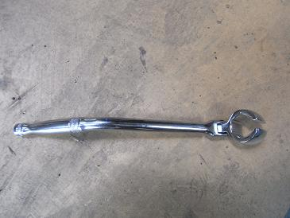
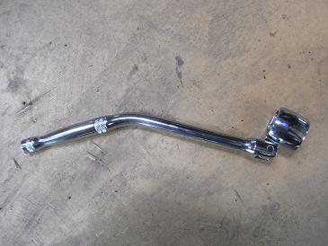
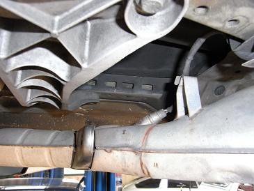
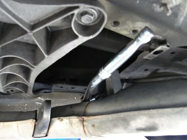
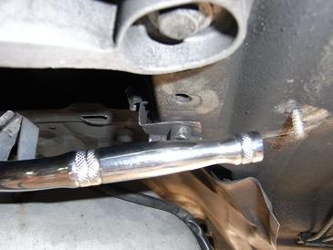
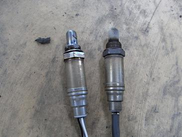
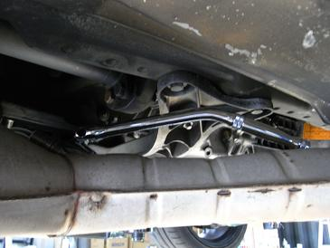
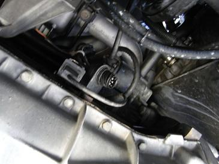

  事前の情報では「マフラーを降ろさないと交換できない」などマイナスな情報も多かったので、一度車の下へもぐって確認･･･ このO2レンチなら降ろさずに交換できるかも？と取寄せた物。 工具専門店ストレートで1200円ぐらいだった。
|
 刺さっているのがO2センサー 確かにマフラーを下げた状態でもレンチをかけるとなると・・・あまりクリアランスがない。。
|
  早速、このレンチをかけてみる。 おぉ！普通に外せた！ あっけなく取り外しに成功。 首振りと持ち手部分が曲がっていて必ず回せるポイントが見つかる。
|
 新旧比較 汚れているぐらいしかわからない。
|
  取り付けは、左側からレンチをかけると、レンチを回せるだけの十分なスペースが確保できる。 配線カバーを取り付けて、マフラーの吊りゴムを元に戻し、カプラーをはめて終了。 交換後は、もとの加速とアクセルレスポンスに戻った。 やっぱりO2センサーの寿命だったようだ。
|